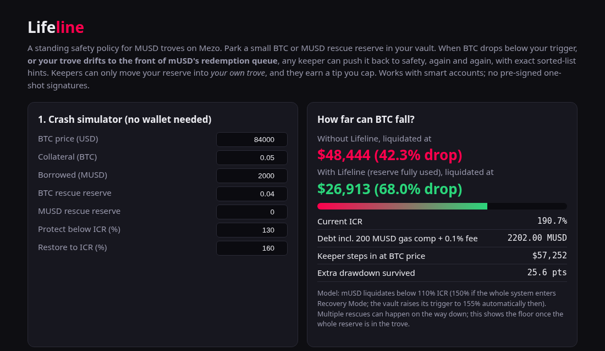
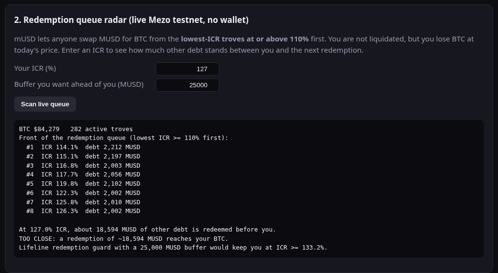

A standing safety policy for MUSD troves on Mezo
Set a rule once: "below 130%, put my reserve in until I'm back at 160%,
and keep 25,000 MUSD of other debt ahead of me in the redemption queue".
Anyone can enforce it. No one can abuse it.
Mezo Buildathon · Track 1 DeFi + Track 2 Access & Distribution
Liquidation
Redemption
Fear of both keeps BTC holders from borrowing MUSD at all.
LifelineVault: a smart account that is the borrower of record for one MUSD trove.
The owner parks a small BTC and/or MUSD rescue reserve and sets a policy:
trigger · target · keeper tip (≤ 2%, capped) · redemption buffer
protect() is permissionless. It fires when ICR < trigger or the trove is inside the redemption buffer:
addColl) or repays (repayMUSD)Keepers can only move the reserve into the owner's own trove. Withdrawals, borrowing and closing stay owner-only. Works for smart accounts; no one-shot pre-signed signatures.
ICR 190.7% (trigger 130.0%, target 160.0%) ok liquidation price $48,444 == BTC crashes 45%: $84,000 -> $46,200. Both troves fall to ~105% RESCUE 0x81c6…485F: ICR 104.9% < trigger 130.0% Lifeline rescued: ICR 104.9% -> 160.0%, added 0.02626 BTC, keeper tip 0.00013 BTC == A liquidator tries both troves Bob (no Lifeline): LIQUIDATED. His 0.05 BTC collateral is gone. Alice (guarded): liquidation REVERTED. Trove still active at the 160% target.
./demo/local-demo.sh forks Mezo testnet. Only the oracle precompile is mocked, so the price can move.
Carol opens at ~127% ICR: safe from liquidation, but near the FRONT of the redemption queue RESCUE 0x8e9b…c965: front of the redemption queue (ICR 127.4% < safe 132.8%) Lifeline rescued (redemption guard): ICR 127.4% -> 133.8%, added 0.00167 BTC == A redeemer swaps 20,000 MUSD for BTC through mUSD's redemption mechanism status 1 (success) Carol (guarded): collateral unchanged at 0.03507 BTC. The redemption never reached her.
Control test: without the guard, the same 20,000 MUSD redemption against the live trove list takes Carol's BTC.


Same trove, same 0.04 BTC reserve: the liquidation price moves from $48,444 to $26,913. The radar reads the live testnet queue with no wallet needed. Wallet actions: create vault → open trove with exact hints → watch health.
LifelineFactory 0x37aC7acd4e48b79bb0dc6AaCA5AF3611cF176149 Demo vault 0xC92BfDC83b03d32e39930Bfb789233e1Cc0fdbEF Source verified on Sourcify (exact match) open trove at 127.0% ICR (exact hints) tx 0xd624a32c...9da0 redemption-guard lift: front of queue, 127.0% -> 134.1% tx 0x2374b4b3...6e91 policy tightened to trigger 140% / target 150% tx 0xeb93cddc...bdec trigger rescue by keeper: 134.1% -> 150.0% tx 0x1470fdfb...13ea
Real oracle, real 280-trove list, permissionless keeper. Links in the README and on explorer.test.mezo.org
The vault is healthy at 150% today: liquidation price ~$61.7k, redemption guard ok.
| Alerts only | One-shot pre-signed rescue | Lifeline | |
| Acts while you sleep | no | once | every time |
| Rescue asset | – | repay MUSD | add BTC and/or repay |
| Recovery Mode (150%) | warn | no | trigger auto-raised |
| Redemption queue | monitor | monitor | on-chain guard |
| Smart accounts / Passport | – | EOA signature | any owner |
| Fork tests vs live mUSD | – | – | 16 / 16 |
No admin, no upgrade keys, reentrancy guarded, double-capped tip, MIT, CI on every push. Not audited yet: testnet first.
Never get liquidated, or redeemed, in your sleep.
Code, tests, keeper and demo: github.com/XachP/mezo-lifeline
Live dashboard: xachp.github.io/mezo-lifeline
Mezo testnet factory: 0x37aC7acd4e48b79bb0dc6AaCA5AF3611cF176149
Built with an AI coding agent and reviewed by the submitter. MIT licensed.